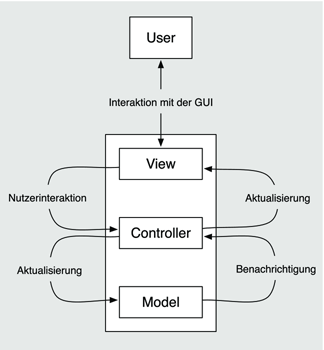

Zum Online-Shop
Zum Online-Shop
2.3 Model, View und Controller
Für das Beispielprogramm HelloWorld hat Xcode diverse Dateien angelegt. Wozu sind die alle da? Wenn der View – also die Ansicht – der App doch in den XIB-Dateien liegt, wozu dient dann die Controller-Klasse? Die Antwort auf diese Fragen liefert das Architekturmuster, das Apple für alle Cocoa-Applikationen empfiehlt.
Das Model-View-Controller-Muster, nach seinen Komponenten auch abgekürzt MVC genannt, wurde Ende der 1970er-Jahre zusammen mit der Programmiersprache Smalltalk entwickelt. Es beschreibt eine Struktur zum Aufbau von Applikationen und zählt deswegen zu den Architekturmustern und nicht zu den Entwurfsmustern, die nur Lösungen für Teilprobleme einer Applikation beschreiben. Die Struktur soll dabei die Wartbarkeit und die Erweiterbarkeit des Programmcodes verbessern. Sie unterteilt die Applikationen in sinnvolle Komponenten und erleichtert dadurch die Entwicklung größerer Anwendungen.
Cocoa verwendet das Model-View-Controller-Muster als Grundlage für die Applikationsentwicklung. Wenn Sie dieses Muster noch nicht kennen, erscheint es Ihnen vielleicht für kleinere Apps etwas aufwendig. Sie sollten aber dieses Muster konsequent in Ihren Applikationen anwenden. Zum einen erleichtert es Ihnen auf Dauer die Entwicklung und hilft Ihnen, sauberen und übersichtlichen Code zu schreiben. Zum anderen ist es aber auch sehr schwer, eine Cocoa-App an diesem Muster vorbei zu programmieren, da sowohl die Tools als auch das API auf das MVC-Muster ausgerichtet sind.
2.3.1 Der Aufbau des Musters
MVC teilt die Klassen eines Programms in drei Bereiche auf, die man auch Ebenen oder Schichten nennt. Das Modell verwaltet die Daten des Programms. Diese Schicht kapselt also die Daten der Anwendung in Klassen. In dem Programm Adressbuch sind beispielsweise diese Daten die gespeicherten Adressen. Dessen Modell besitzt also Klassen zur Darstellung von Adressen. Die Aufgabe des Modells ist auch, die Daten konsistent zu halten. Das bedeutet, dass ein gutes Datenmodell die Anwendungsdaten fehlerfrei abbilden sollte. Im Adressbuch können Sie beispielsweise keinen vollständig leeren Eintrag speichern. Für das Datenmodell des Adressbuchs ist ein leerer Eintrag ein Fehler, den es nicht zulässt. Das fünfte Kapitel stellt ein Puzzlespiel vor. Dort hat das Modell nicht nur die Aufgabe, den aktuellen Zustand des Puzzles zu speichern. Es achtet auch darauf, dass der Nutzer keine ungültigen Züge ausführen kann.
Der View enthält alle Klassen, die für die direkte Interaktion des Programms mit dem Nutzer zuständig sind. Das sind sowohl Klassen, die etwas anzeigen als auch Eingaben verarbeiten können. Viele View-Klassen können auch beides. Typische Beispiele für Views sind Bilder, Buttons, Textfelder und Fenster. Der Wecker aus dem nächsten Kapitel verwendet für die Darstellung nicht nur Standardelemente, die iOS zur Verfügung stellt. Er benötigt darüber hinaus auch applikationsspezifische View-Elemente, die spezielle Darstellungs- und Eingabemöglichkeiten haben.
Der Controller im MVC-Muster stellt schließlich das Bindeglied zwischen dem Modell und den Views dar. Er übernimmt die Steuerung des Programms und enthält die Applikationslogik. Der Controller darf auf die Komponenten des Modells und des Views zugreifen und auch deren Methoden aufrufen. Umgekehrt sollten aber weder das Modell noch der View die Klassen oder Methoden des Controllers kennen.
Abbildung 2.33 Das MVC-Architekturmuster in der Übersicht
| Machen Sie sich nicht abhängig! |
|
Die Modell- und die View-Schicht sollten jeweils keine Abhängigkeit zu den beiden
anderen Schichten haben. Abhängigkeit meint dabei die Verwendung der Klassen der anderen Ebenen. Verwenden Sie also keine
Controller- oder View-Klassen bei der Implementierung des Modells und auch keine Controller-
oder Modell-Klassen bei der Implementierung Ihrer Views.
|
Stellen Sie sich vor, Sie sollen für einen Kunden eine App für die Inventur seines Lagers entwickeln. Das MVC-Muster gibt Ihnen dazu einen einfachen und groben Weg vor, wie Sie das Programm umsetzen können. Sie starten mit dem Modell, in dem Sie die Klassen (z. B. für Produkte, Warengruppen, Hersteller), deren Attribute und deren Beziehungen zueinander festlegen. Danach setzen Sie die ersten Eingabemasken nach den Wünschen Ihres Kunden um und implementieren schließlich die Geschäftslogik der App in den Controllern.
Wenn das Programm erfolgreich ist, wird der Kunde wahrscheinlich recht bald mit Änderungswünschen zu Ihnen kommen. Die Lageristen wollen einen Barcode-Scanner integriert haben, die Buchhaltung braucht eine Suchfunktion, und die IT-Abteilung will endlich die SAP-Anbindung realisieren. Sie werden wahrscheinlich alle drei Schichten des Programms verändern müssen. Jetzt treten aber die Vorteile des MVC-Musters zutage:
- Sie können neue Controller und Views für die neuen Anwendungsfälle implementieren, ohne aufwendige Änderungen an den bestehenden Klassen vornehmen zu müssen.
- Wenn Sie Ihre Modellklassen erweitern müssen, müssen Sie in der Regel nur die bestehenden Controller anpassen.
- Auch für die Erweiterung Ihrer bestehenden Views brauchen Sie nur Logik in den entsprechenden Controllern anzupassen.
Natürlich kann das auch alles sehr aufwendig und kompliziert sein. Aber diese Aufwände sind verglichen mit Spaghetticode, bei dem sich Abhängigkeiten quer durch die gesamte Applikation ziehen, relativ gering.
2.3.2 Key-Value-Observing
Die Modellobjekte können auch ohne Abhängigkeit Kontakt zum Controller aufnehmen, da sie von Haus aus das Beobachtermuster unterstützen. Damit können sich Controllerobjekte als Beobachter bei den Modellobjekten registrieren. Wenn das Programm ein Modellobjekt verändert, benachrichtigt es alle Beobachter durch einen Methodenaufruf. Das Beobachtermuster erzeugt dabei keine Abhängigkeit des Modells vom Controller, da die Modellobjekte die Klassen ihrer Beobachter nicht kennen. Diese Verbindung nennt man auch lose Kopplung.
Cocoa Touch setzt das Beobachtermuster über das Key-Value-Observing (KVO) um. Es ist aber nicht nur auf Modell- und Controllerklassen beschränkt, sondern beliebige Klassen können es verwenden. Das beobachtete Objekt muss das Protokoll NSKeyValueObserving implementieren, was für jede Subklasse von NSObject automatisch gilt, da diese das Protokoll von NSObject erben.
Die Klasse NSObject implementiert folgende Methoden, um die Beobachter eines Objekts zu verwalten:
- (void)addObserver:(NSObject *)observer
forKeyPath:(NSString *)keyPath
options:(NSKeyValueObservingOptions)options
context:(void *)context;
- (void)removeObserver:(NSObject *)observer
forKeyPath:(NSString *)keyPath;
Listing 2.29 Methoden zur Verwaltung von Beobachtern
Darüber können Sie jeweils einen Beobachter zu einem Attribut bei einem Objekt registrieren beziehungsweise abmelden. Wenn Sie beispielsweise das Attribut firstName einer Person beobachten wollen, können Sie den Beobachter folgendermaßen registrieren:
[thePerson addObserver:theController
forKeyPath:@"firstName"
options:NSKeyValueObservingOptionNew |
NSKeyValueObservingOptionOld
context:NULL];
Listing 2.30 Registrierung eines Beobachters
Nach dieser Registrierung benachrichtigt das Personenobjekt thePerson den Beobachter theController jetzt bei jeder Änderung des Attributs firstName. Die beiden Konstanten für den Optionsparameter geben dabei an, dass die Benachrichtung immer den alten und den neuen Attributwert enthalten soll. Für den Empfang der Benachrichtigung muss der Empfänger folgende Methode implementieren:
- (void)observeValueForKeyPath:(NSString *)keyPath
ofObject:(id)object
change:(NSDictionary *)change
context:(void *)context
Die Attributwerte enthält dabei das Dictionary change. Sie können die Methode folgendermaßen implementieren:
- (void) observeValueForKeyPath:(NSString *)inKeyPath
ofObject:(id)inObject
change:(NSDictionary *)inChange
context:(void *)inContext {
if([inKeyPath isEqualToString:@"firstName"]) {
NSLog(@"alter Wert:%@", [inChange valueForKey:NSKeyValueChangeOldKey]);
NSLog(@"neuer Wert:%@", [inChange valueForKey:NSKeyValueChangeNewKey]);
}
}
Listing 2.31 Implementierung der Observierungsmethode
Die Registrierung aus Listing 2.30 registriert den Beobachter nur für genau ein Objekt-Attribut-Paar. Wenn Sie weitere Objekte oder Attribute beobachten möchten, müssen Sie diese gesondert registrieren. Vor der endgültigen Freigabe eines Beobachters müssen Sie ihn immer abmelden. Ansonsten erhalten Sie einen Laufzeitfehler, und Ihr Programm stürzt ab.
Für dieses Beispiel sieht der entsprechende Aufruf folgendermaßen aus:
[thePerson removeObserver:theController forKeyPath:@"firstName"];
Listing 2.32 Abmelden eines Beobachters
2.3.3 Target-Action-Mechanismus
Sie können auch bei Views das Beobachtermuster einsetzen, um Änderungen des View-Zustands im Controller mitzubekommen. Das ist aber häufig recht aufwendig umzusetzen, da es nur eine Beobachtermethode, meistens aber mehrere zu beobachtende Views gibt.
Stattdessen kann in Cocoa Touch ein View den Controller über den Target-Action-Mechanismus benachrichtigen. Dazu registrieren Sie das Objekt (das Target) mit einer Methode (der Action) und den Ereignistypen beim betreffenden View. Dieser View ruft dann beim Auftreten des entsprechenden Ereignisses die Methode in dem registrierten Objekt auf.
In Cocoa Touch unterstützen aber nicht alle Views diesen Mechanismus. Er ist nur bei Objekten der Klassse UIControl verfügbar, wobei aber das Target eine beliebige Klasse haben darf. Es sollte aber ein Controller sein, da die Verwendung von Klassen der beiden anderen Schichten eine Verletzung des MVC-Musters wäre. Sie können Target-Action-Beziehungen über den Programmcode oder den Interface Builder herstellen. Sie können über die Methoden
- (void)addTarget:(id)target
action:(SEL)action
forControlEvents:(UIControlEvents)controlEvents
- (void)removeTarget:(id)target
action:(SEL)action
forControlEvents:(UIControlEvents)controlEvents
Listing 2.33 Verwaltung von Action-Targets bei Controls
Target-Action-Paare registrieren beziehungsweise abmelden. Der Datentyp SEL bezeichnet dabei übrigens Selektoren.
Auch hier müssen Sie darauf achten, die Paare rechtzeitig freizugeben. Sie dürfen allerdings bei der Abmeldung nil für das Target verwenden, um alle Paare abzumelden. Abschnitt 3.2.4, »Ereignisse«, stellt die verschiedenen Ereignistypen vor.
2.3.4 Controller in Cocoa Touch
Als Sie das HelloWorld-Projekt angelegt haben, hat Xcode automatisch eine Klasse HelloWorldViewController als Unterklasse von UIViewController erzeugt. Sie ist die Basisklasse für alle Controller, die eine Vollansicht verwalten. Der Begriff Vollansicht bezeichnet entweder den kompletten Bildschirm oder die komplett sichtbaren Bereiche der Containerviewcontroller. Zu diesen gehören die Navigations-, Tabbar-, Popover- und Splitviewcontroller. Unterklassen von UIViewController sollten bis einschließlich iOS 4 immer Vollansichten und niemals nur Teilansichten verwalten, da diese Betriebssysteme nur so den kompletten Lade- und Anzeigezyklus des Viewcontrollers unterstützen. Das vierte Kapitel behandelt aber eine Möglichkeit, wie Sie für Subviews eigene Controller erstellen können. Ab iOS 5 können Sie aber auch auf der Basis von UIViewControllern Subviews verwalten.
Jede Vollansicht sollte einen eigenen View-Controller besitzen. Dieser sollte immer eine Unterklasse von UIViewController sein. In der Regel legen Sie für jede Vollansicht auch eine Unterklasse an, da Sie die kompletten View-Controller-Klassen in der Regel nicht wiederverwenden können. Diese Klassen enthalten ja schließlich Ihre Geschäftslogik. Die Hierarchie eines View-Controllers liegt in einer XIB-Datei, sofern die Views nicht über Programmanweisungen erzeugt werden. Die Datei sollte den gleichen Namen wie die Controller-Klasse haben.
Nicht nur die View-Controller, sondern auch das Application-Delegate gehören zur Controller-Schicht der Applikation. Die Aufgabe der Controller ist es, die Eigenschaften des jeweiligen Views zu steuern und zu kontrollieren.
Ihr Kommentar
Wie hat Ihnen das <openbook> gefallen? Wir freuen uns immer über Ihre freundlichen und kritischen Rückmeldungen.


{kind=link}